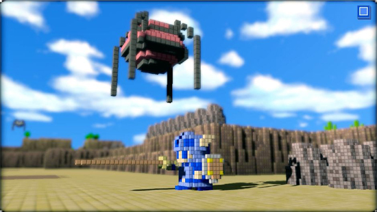
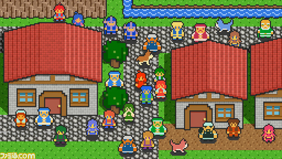

I must be missing something - 3D Dot Heroes
2009-09-07 15:46:17
status: inherit
author: Bryan
 Tektite? Is that you?
The first look at From Software's 3D Dot Heroes Game (PS3) recently made the rounds through the blag-o-web, but is so far limited to a number of nice looking high-resolution screenshots and some vague information about the context of the game.
Despite being intrigued, I'm fairly confounded by the popular reaction, especially from reader comments.
Destructoid: "Oh, From Software ... you really know how to make me drool."
Joystiq: "From Software's latest PS3 game takes 8-bit sprites and mostly updates them for the current generation, with amazing results."
G4TV: "The look and idea of 3D Dot Game Heroes is amazing, and I want to share it with you."
Beyond some critical observations, reader comments mostly consist of "WANT", "ZOMGs", and hyperbole about how the game is "the most (insert beautiful/creative/anticipated/pretty here) thing ever". The look certainly is attractive, but I don't know if I would go THAT far.
A comment on GameSetWatch smartly pointed out the similarity to an older prototype of the Yuusha No Kuse Ni Namaikida games. The "8-bit graphics redone as voxel graphics" idea itself is certainly not original, as 3D tribute art and mods of this kind have been floating around for some time now. For example, see Justin Buonvino's DeviantArt.
 The question is - is this a cleverly managed/optimized birds-eye view in the same engine? Or different rendering altogether? I suspect the latter.
Essentially the game appears to be a tribute (or potentially parody) to both the aesthetics and conventions of 8-bit Japanese RPGs. Apparently the player starts out in a traditionally 2D 8-bit world which somehow turns 3D. Depending on how central this dimensional shift is to the context and/or gameplay of the game, it could actually be hilarious - imagine the mass chaos such a alteration would cause in the 8-bit residents' lives - or at least very interesting.
I absolutely can get behind the self-referential, ironic nature of this idea. However, aesthetically speaking, the appeal so far seems to be driven on nostalgia alone, along with some basic post-processing work - a tilt-shift style focus and so on. It's attractive, but what we've seen at this point doesn't suggest too much beyond being a 8-bit-style game in 3D.
Don't get me wrong - there's nothing that suggests this game will be bad! It absolutely COULD be genius self-referential parody or tribute. It doesn't even need to be brilliantly inspired to still be a solid game. However - so far there isn't much to suggest it WILL any of those things either. What may be compelling about this title entirely remains to be seen.
My point is that that the popular reaction to this early news seems to have jumped the gun - and that 3D Dot Heroes could very easily fall into the trap of relying entirely on a visual-nostalgia gimmick. I certainly hope that won't be the case!
 Gel? Stalfos?
Gel? Stalfos?
Now I am being a little hypocritical as usual... An 8-bit JRPG-inspired/tribute game that would get me drooling and ZOMGing? A Dragon Quest I or Legend of Zelda remake that looks, plays, and feels like one of Fumito Ueda's games, in all their atmospheric, minimalistic glory.
Edit:
Now THIS I would pick up in an instant... if it were somehow possible to have an abstract, voxel graphics Asteroids/Pong/Space Invaders/Mario/Pac-Man mashup be coherent in the least as a game. Or maybe not.
">
Comments: